賴瑞隆zenolai2
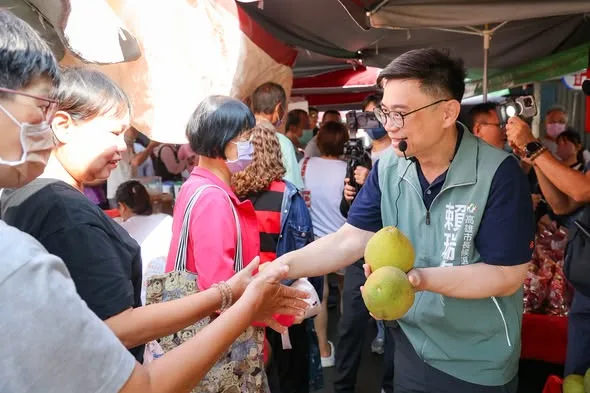
早安！☀️ 連假第一天從 ＃二苓市場 出發！祝大家中秋佳節愉快！ 鄭光峰 高雄市議員 黃敬雅 Huang Ching-Ya 吳昱鋒-科技先鋒 陳致中 Chih-Chung Chen
Accounts
| 平台 | 帳號 | 已收錄貼文 | 最後更新 |
|---|---|---|---|
| 官網 | https://zenolai.oen.tw/ | 0 | — |
| https://www.facebook.com/zenolai2/ | 140 | 2026-09-25 09:53 | |
| https://www.instagram.com/zenolai/ | 143 | 2026-09-24 23:14 | |
| Threads | https://www.threads.com/@zenolai | 149 | 2026-09-24 15:59 |
| YouTube | https://www.youtube.com/@%E8%B3%B4%E7%91%9E%E9%9A%86 | 65 | 2026-09-23 17:17 |
| LINE 官方帳號 | https://lin.ee/zW17s0a | 0 | — |
Timeline
顯示 497 / 497 則

早安！☀️ 連假第一天從 ＃二苓市場 出發！祝大家中秋佳節愉快！ 鄭光峰 高雄市議員 黃敬雅 Huang Ching-Ya 吳昱鋒-科技先鋒 陳致中 Chih-Chung Chen

老師顧孩子，我們挺老師！ 讓老師少一分負擔，給孩子多一分陪伴 今天參加高雄市教育產業工會「＃928教育磐石—歷久彌堅」頒獎典禮暨感恩餐會，恭喜所有得獎夥伴！謝謝何耿旭理事長與工會團隊，長年為教師權益奔走，將校園第一線的問題帶進公共討論。 老師每天備課、教學、照顧學生，也承擔不少行政工作。要讓老師有時間關心每個孩子，就要從增加人力、減輕工作負擔，以及避免濫用投訴著手。 今年七月，我簽署高教產提出的六項教育訴求。未來會推動降低班級人數、補足專業人力、減輕行政負擔，強化特教與弱勢學生的照顧，也讓教師、家長與學校有充分溝通、共同解決問題的管道。 教師節即將到來，謝謝每一位在課堂內外陪伴孩子的老師。照顧學生的同時，也請記得照顧自己，祝大家 ＃教師節快樂！ 高雄小金剛許智傑 康裕成 高雄市議長 鄭光峰 高雄市議員 高雄市議員郭建盟 陳慧文 高雄市議員 李雅慧 高雄市議員張博洋 尹立 左營楠梓市議員參選人

@zenolai:前鎮漁港需要務實對策，不需要「先唱衰、再收割」！ 前鎮漁港是世界級的遠洋漁港，漁獲佔全台九成，前鎮漁港的發展與漁民權益，是我長期關心推動，五大建設81億爭取到位，許多細項也多次召開協調會處理，攤商與船員關切的事項，中央、地方早處理拍板定案。 9月17日，我陪同行政院秘書長@changtunhan 、農業部長陳駿季實地視察，並與陳其邁市長共同討論，漁業署確定公布「兩年試營運計畫」： ✅ 運銷中心攤商兩年免費進駐，依衛生標準與使用需求調整動線、降溫及攤位設備。 ✅ 船員住宿費再爭取降至100元，餘額協調由船東負擔，外籍漁工等同免費入住。 ✅ 改善船員大樓供水、異味、隔音，持續爭取增加接駁公車班次，回應實際需求。 今年度預算藍白主提凍結「漁業發展」預算1000萬元、凍結「漁業管理」預算2000萬元，民眾黨團也凍結7581萬的漁業相關預算。相關言行漁民及高雄市民都看在眼裡。
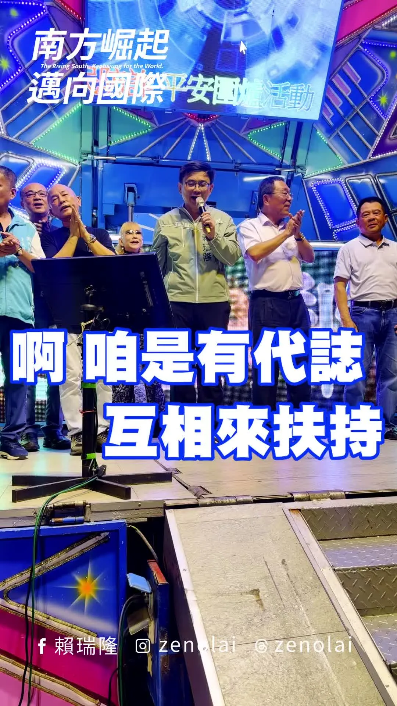
跟大家做伙過中秋，開心的時候一起唱歌，有需要的時候互相來扶持，因為你們是我的兄弟姐妹啦！🥮
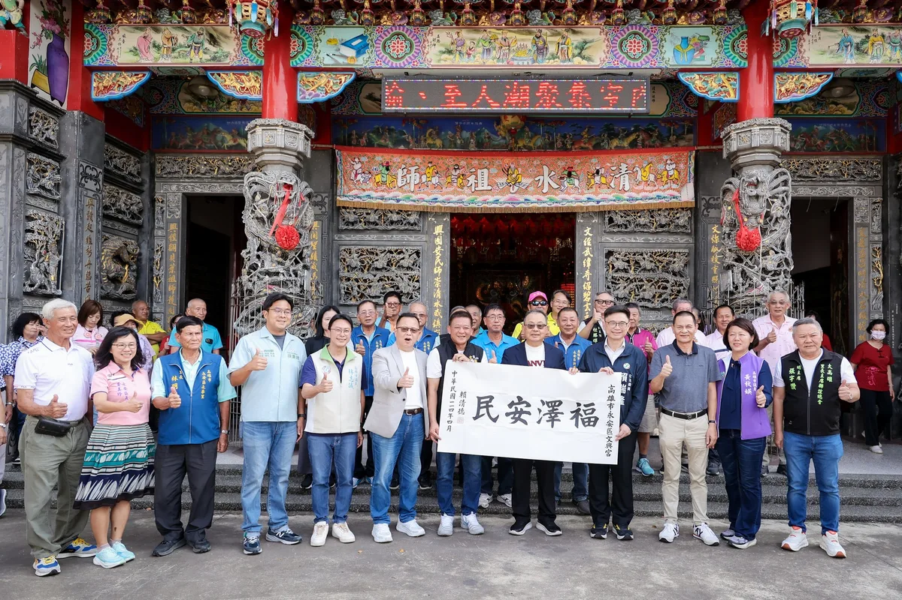
墨寶傳心意，神祇護鄉里 向眾神獻上祈福敬獻！ 今天到 #永安文興宮 和 #五里林代天府，代表 賴清德 總統致贈「民安澤福」及「民佑澤厚」墨寶，與鄉親一起向神祇祈福，祈求地方平安、百業興旺。 文興宮主祀大家熟悉的 #黑面祖師公，自西元1805年由信徒集資興建，至今已有200多年歷史。廟宇所在的維新里，舊稱「#竹仔港」，也是永安開發較早的區域，多年來祖師公庇佑一代又一代鄉親，見證地方的開墾與發展，承載許多家庭共同的記憶。 橋頭五里林護天府 主祀 #李府千歲，是鄉親寄託信仰、祈求平安的所在。「五里林」的地名，源自早年典寶溪畔綿延數里的樹林。過去居民因地勢與水流關係，常受水患之苦，與水共生的聚落歷史，記錄先民生活打拚的歲月，也讓祈求家園平安的心願，格外深刻。 面對極端氣候，近年 陳其邁 Chen Chi-Mai 市長與市府團隊攜手中央，陸續完成永安北溝排水整治，提升防洪能力；橋頭則投入抽水站及滯洪池等防洪治理工程，加強典寶溪沿線排水及滯洪池容量。雖然已經進步許多，但我知道仍有不足，未來我將持續加強高雄各地防洪韌性，保護民眾人身安全及財產。 文興宮香火代代相傳，凝聚著鄉親對家園的情感，也寄託著每個家庭對平安的盼望。五里林護天府凝承載著地方對家園平安的共同心願，從典寶溪畔的生活記憶，到今日聚落的發展，始終是鄉親安定的力量。誠心祈求兩間廟宇，持續庇佑鄰里身體健康、代代安居，也保佑台灣風調雨順、國泰民安！

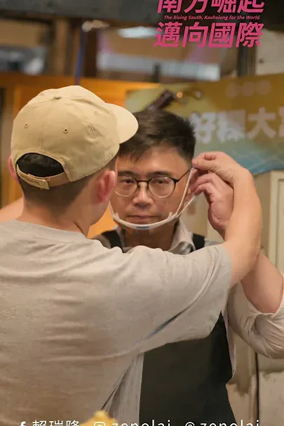
和蕭美琴副總統一起做紅龜粿，我做的比較大顆，剛好可以多分一口給大家！
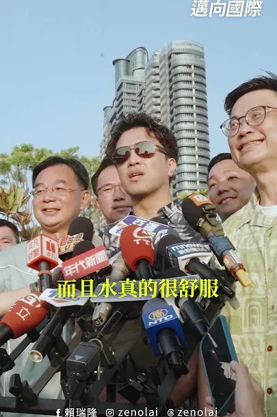
「隆捲風」遇上「洋流」，這次我們划起SUP，一起感受高雄的水上魅力！

和 蕭美琴 副總統一起做紅龜粿，我做的比較大顆，剛好可以多分一口給大家！
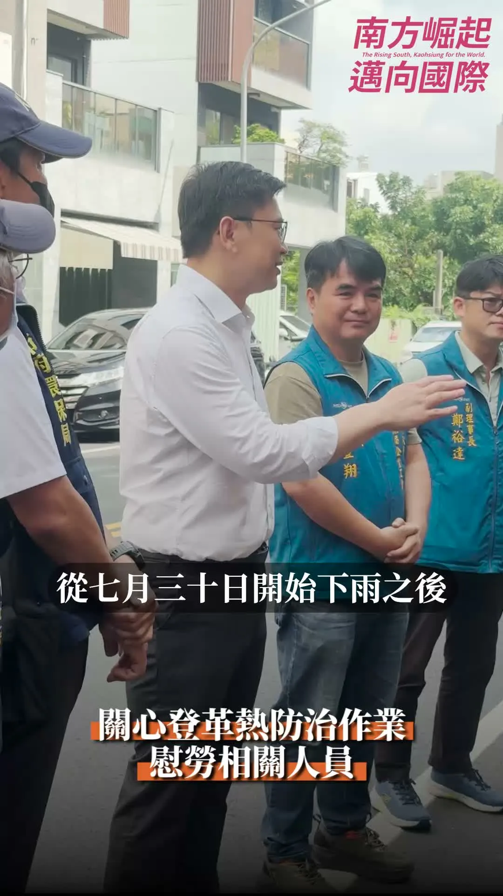
謝謝各位無名英雄用心守護家園，辛苦了！💪

🪩高雄半導體S廊帶 產業聚落再添一塊 #白埔產業園區 正式動土！ 今天與 賴清德 總統、陳其邁 Chen Chi-Mai 市長及產業界夥伴參加白埔產業園區動土，共同見證中央地方攜手，持續為高雄引進投資。 白埔產業園區以「半導體先進設備材料驗證基地」及「AI先進製造基地」為定位，串聯楠梓、仁武、橋頭等產業聚落，從先進製程、封裝測試，到材料、設備及AI製造，進一步完善高雄半導體S廊帶布局。 接下來，我會結合左營 #國家重點領域校際研教園區，加強人才培育，提供年輕人在高雄就業、發揮所長的機會。同時推動北高雄傳統產業高值化，以「科技加值傳產、傳產支撐科技」為方向，協助岡山、橋頭的金屬、機械、扣件業者，以及路竹的材料業者，運用既有製造優勢，切入半導體供應鏈。 從扣件到晶片，高雄累積多年的製造實力，正迎來新的發展機會。我會繼續努力，為高雄拚下一個黃金十年！ 邱志偉 李柏毅 拚搏未來 高雄小金剛許智傑 康裕成 高雄市議長 邱俊憲 高雄市議員 林智鴻 高雄市議員 黃秋媖-動保議員 林志誠-高雄市議員 蔡秉璁 高雄向前衝 尹立 左營楠梓市議員參選人
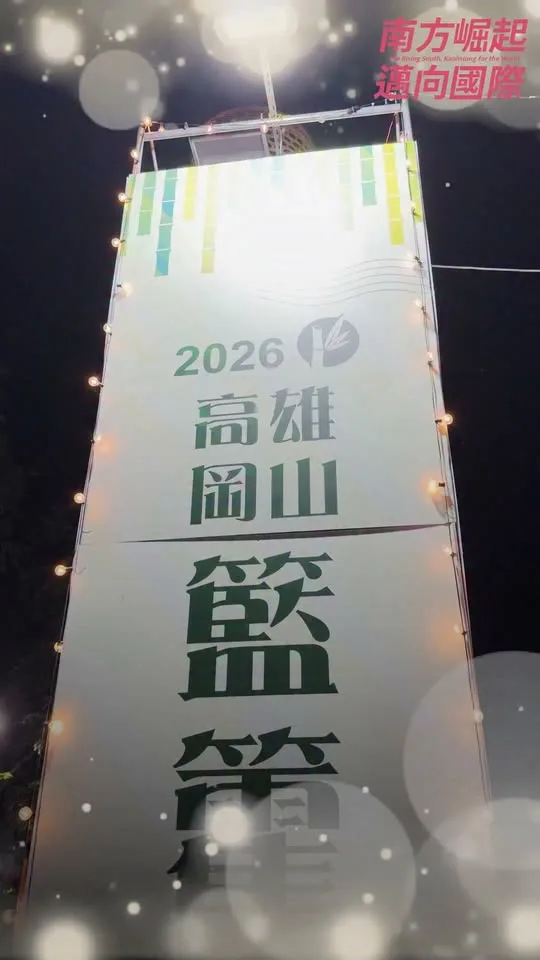
每年三次相聚在籃籗會，好吃、好玩、好逛一籮籗！

老師顧孩子，我們挺老師！ 讓老師少一分負擔，給孩子多一分陪伴 今天參加高雄市教育產業工會「＃928教育磐石—歷久彌堅」頒獎典禮暨感恩餐會，恭喜所有得獎夥伴！謝謝何耿旭理事長與工會團隊，長年為教師權益奔走，將校園第一線的問題帶進公共討論。 老師每天備課、教學、照顧學生，也承擔不少行政工作。要讓老師有時間關心每個孩子，就要從增加人力、減輕工作負擔，以及避免濫用投訴著手。 今年七月，我簽署高教產提出的六項教育訴求。未來會推動降低班級人數、補足專業人力、減輕行政負擔，強化特教與弱勢學生的照顧，也讓教師、家長與學校有充分溝通、共同解決問題的管道。 教師節即將到來，謝謝每一位在課堂內外陪伴孩子的老師。照顧學生的同時，也請記得照顧自己，祝大家 ＃教師節快樂！ 高雄小金剛許智傑 康裕成 高雄市議長 鄭光峰 高雄市議員 高雄市議員郭建盟 陳慧文 高雄市議員 李雅慧 高雄市議員張博洋 尹立 左營楠梓市議員參選人

前鎮漁港需要務實對策，不需要「先唱衰、再收割」！ 前鎮漁港是世界級的遠洋漁港，漁獲佔全台九成，前鎮漁港的發展與漁民權益，是我長期關心推動，五大建設81億爭取到位，許多細項也多次召開協調會處理，攤商與船員關切的事項，中央、地方早處理拍板定案。 9月17日，我陪同行政院秘書長 張惇涵 Chang Tun-Han 、農業部長陳駿季實地視察，並與陳其邁市長共同討論，漁業署確定公布「兩年試營運計畫」： ✅ 運銷中心攤商兩年免費進駐，依衛生標準與使用需求調整動線、降溫及攤位設備。 ✅ 船員住宿費再爭取降至100元，餘額協調由船東負擔，外籍漁工等同免費入住。 ✅ 改善船員大樓供水、異味、隔音，持續爭取增加接駁公車班次，回應實際需求。 今年度預算藍白主提凍結「漁業發展」預算1000萬元、凍結「漁業管理」預算2000萬元，民眾黨團也凍結7581萬的漁業相關預算。相關言行漁民及高雄市民都看在眼裡。 「高雄城市轉型沒有退路」，前鎮漁港啟用超過50年，才好不容易爭取到81億元經費翻新整建，追求的是遠洋漁業升級的寶貴機會。高雄需要的是能夠解決問題的市長，讓城市持續升級的市長，我會持續盯緊改善進度，讓攤商安心做生意、船員安心休息，回應所有漁民的期待。

🌕中秋節前夕相聚，攜手做高雄堅強後盾 中秋佳節將屆，在這團圓、感恩的時刻，與市民朋友相聚，深深感受到高雄這座城市的溫暖和凝聚力，大家在各自的崗位上，為高雄的進步默默付出。 「由服務驅動、以價值觀團結」，是國際獅子會的核心精神。感謝300E-5區五福獅子會吳信霈會長相邀，獅友們長期扎根服務，是社會安定的重要力量。 而說到撐起高雄發展，必定有我廣大勞工兄弟姐妹。 在高雄市總工會秋節餐敘上，我向林明章理事長以及在座所有兄弟姐妹表達敬意。勞工是高雄經濟轉型的基石，我會持續爭取提升勞工權益，讓大家有更安全、更有保障的就業環境。 信仰，是支持我們大步向前的力量。 來到前鎮慈德宮參加金府千歲聖誕平安宴，感謝林金藝主委三十多年來的用心護持。前鎮這幾年的蛻變有目共睹，從81億元的前鎮漁港大改造，到亞灣區智慧公宅、黃線捷運的推動。我會接棒延續這些重大建設，讓前鎮的風華再次展現。 來到小港大坪頂無極主公殿參加平安宴，感謝梁敬德主委的用心，一同向廣澤尊王祈求國泰民安。小港是高雄的南大門，我會全力督促捷運小港林園線、國道七號貨櫃專用道如期完工，改善沿海路的交通安全，給小港居民一個更安全、更進步的生活環境。 從民間社團、勞工體系到基層宮廟，每一股力量都是推動高雄向前的關鍵，我會帶著這份感恩的心，把大家的期盼化為具體的施政成績，我們一起打拚，讓高雄成為更宜居、更繁榮的偉大城市！ 敬祝中秋佳節愉快、闔家平安！ 高雄小金剛許智傑 林岱樺 黃彥毓 前鎮小港 我願意 黃文益 高雄市議員 市議員李順進 尹立 左營楠梓市議員參選人 吳昱鋒-科技先鋒 李雅慧 高雄市議員 服務團隊 鄭光峰 高雄市議員 服務團隊 陳致中 Chih-Chung Chen 服務團隊
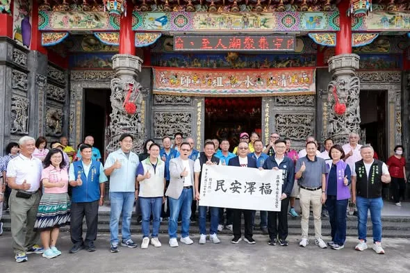
墨寶傳心意，神祇護鄉里 向眾神獻上祈福敬獻！ 今天到 #永安文興宮 和 #五里林代天府，代表 賴清德 總統致贈「民安澤福」及「民佑澤厚」墨寶，與鄉親一起向神祇祈福，祈求地方平安、百業興旺。 文興宮主祀大家熟悉的 #黑面祖師公，自西元1805年由信徒集資興建，至今已有200多年歷史。廟宇所在的維新里，舊稱「#竹仔港」，也是永安開發較早的區域，多年來祖師公庇佑一代又一代鄉親，見證地方的開墾與發展，承載許多家庭共同的記憶。 橋頭五里林護天府 主祀 #李府千歲，是鄉親寄託信仰、祈求平安的所在。「五里林」的地名，源自早年典寶溪畔綿延數里的樹林。過去居民因地勢與水流關係，常受水患之苦，與水共生的聚落歷史，記錄先民生活打拚的歲月，也讓祈求家園平安的心願，格外深刻。 面對極端氣候，近年 陳其邁 Chen Chi-Mai 市長與市府團隊攜手中央，陸續完成永安北溝排水整治，提升防洪能力；橋頭則投入抽水站及滯洪池等防洪治理工程，加強典寶溪沿線排水及滯洪池容量。雖然已經進步許多，但我知道仍有不足，未來我將持續加強高雄各地防洪韌性，保護民眾人身安全及財產。 文興宮香火代代相傳，凝聚著鄉親對家園的情感，也寄託著每個家庭對平安的盼望。五里林護天府凝承載著地方對家園平安的共同心願，從典寶溪畔的生活記憶，到今日聚落的發展，始終是鄉親安定的力量。誠心祈求兩間廟宇，持續庇佑鄰里身體健康、代代安居，也保佑台灣風調雨順、國泰民安！
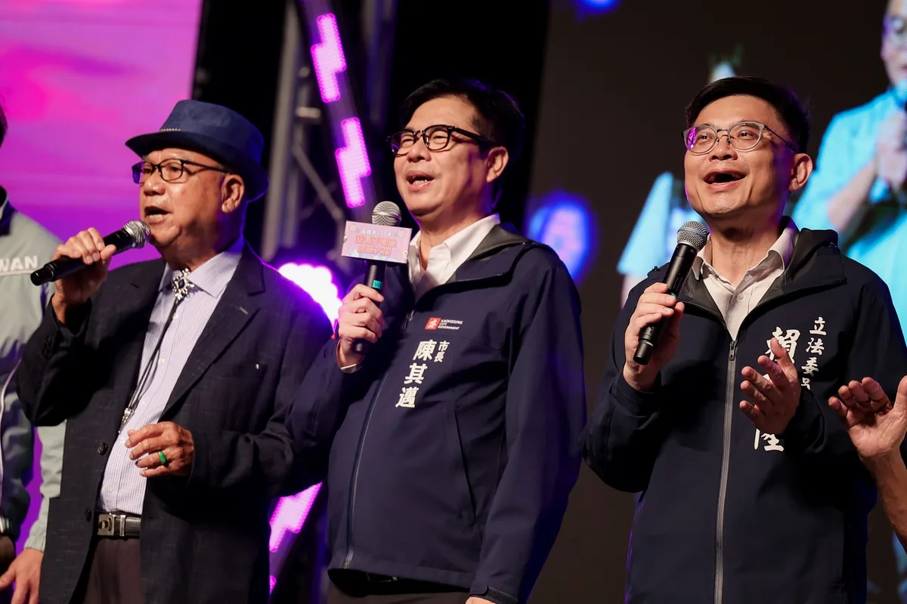
麥克風交給你們，搭舞台的事交給我！🎤 參加 #銀髮好聲音歌唱大賽 決賽，長輩們比唱功、比台風，連造型都不馬虎！今天我也和高雄隊好夥伴們帶來「快樂的出航」，讓大家放鬆心情，快樂開唱！ 我常在想，當市長就像搭舞台的人。舞台要穩、燈光要亮，讓台上的人盡情發光，也要把台下照顧好，讓大家安心坐下，快樂享受。城市也是如此，長輩想唱歌、交朋友，就要有方便參與的活動與社區空間，出門交通要便利，散步道路要平整，需要照護時，也要有人接得住。 這幾年，陳其邁 Chen Chi-Mai市長 佈建社區關懷與長照據點合計近1,200處，為高雄打下基礎。未來，我會接續努力，推動敬老卡每年提高至15,000點、擴大使用範圍，完善樂齡公園與無障礙環境，支持長輩自在出門、享受生活。 讓每一位長輩都能唱自己喜歡的歌、走自己想走的路、過自己想要的生活。舞台我來搭，掌聲和精彩，交給大家一起創造！ 林岱樺 邱俊憲 高雄市議員 陳慧文 高雄市議員 張漢忠 高雄市議員 蘇致榮 鳳山阿榮 黃捷 服務團隊

讓孩子盡情放電，也為想像力充電！📚 首屆 #臺灣國際兒童及青少年嘉年華 就在高雄！ 閱讀讓孩子從故事中認識世界，學習思考，也練習理解他人感受；戲劇、音樂與影像則打開想像力，幫助孩子找到表達自己的方式。今天來到嘉年華，從書展、劇場到電影，看見多元的藝文體驗如何引發孩子的好奇心，也更加期待，探索興趣、接觸文化能成為孩子成長中的日常。 為了讓文化融入生活，這幾年， @chenchimai 市長打造高雄城市書展，讓學童有更多機會接觸閱讀，同期間也打造70座特色公園，增加孩子遊戲與探索的空間。接下來，我希望在原有基礎上，進一步推動「玩中學、做中學」，把繪本、桌遊、STEAM及戶外探索帶進學習，建置更多小型兒童圖書館與共融特色遊戲場。 孩子探索世界的起點，通常從出生地故鄉開始。越是深入挖掘、保留並展現本土獨特的文化或特色，就越能在國際舞台上展現獨特，吸引跨文化的注目。因此，我提出 #文化高雄世界舞台 政策，將支持文化工作者，從高雄38區的地方故事出發，創作繪本、漫畫、動畫、戲劇與遊戲，藉由不同媒材，讓孩子走進家鄉的故事，也有機會創造自己的故事。 下一個十年，我與隊友們會攜手讓高雄成為友善親子、文化平權的城市，讓所有孩子都能快樂玩、自在學、安心長大。邀請大家把握中秋連假，帶孩子來到高雄，一起看好戲、讀好書，用行動支持好作品，陪孩子快樂探索，帶著好故事回家！ ⏰ 9/23（三）－9/27（日） 📍 高雄展覽館｜「未來世代書展」、「Young Boom!劇場」 📍 喜樂時代影城高雄總圖店｜「Tiffi外送中兒少影展」

@zenolai:各行各業一起努力，把高雄照顧得更好！ 經貿文教各界夥伴齊聚一堂，從幼教、兒照、補教、家長團體，到美容業與各界社團，大家雖來自不同領域，卻有共同心願，就是讓高雄的下一代過得更好，也讓產業有更好的發展。 謝謝劉秀鳳總會長號召成立後援總會，也謝謝各區會長帶領各行各業夥伴響應。各位都是第一線工作者，最了解家長的需要，也最清楚產業面對的問題。
@zenolai:戰貓、隆貓合體！不談別的，先擼貓🐈 邀請 @bikhimhsiao 副總統來到高雄，當然不能錯過貓奴行程。 「勘熟所」是寵物友善餐廳，同時也是收容與送養的愛心中途之家。老闆娘Shiny投入動物救援已經16年，也和我們分享黑貓「洁洁」、虎斑貓「宅宅」從救援、醫療、照護、社會化到等待認養的故事。 才進到店裡坐下，美琴副總統就立刻聊起貓，從家裡4隻貓的個性，一路聊到過去救援毛孩的故事，其中一隻就是大家都很熟悉的「蔡想想」。 每一隻被接住的毛孩背後，都有很多人的時間、心力與付出。因此，我提出「人寵共好的高雄：毛孩四個寶」，未來要增加寵物友善公園與活動空間、建立友善商家與毛經濟產業圈、擴大生命教育與責任飼養，也要持續強化中途照護、源頭管理與動保量能。 毛孩早已是許多家庭重要的一份子。一座城市如何對待動物，也反映了這座城市如何看待生命。希望未來的高雄，讓毛孩有人疼、中途有人挺、飼主有更友善的環境，讓每一個生命都能被好好接住。
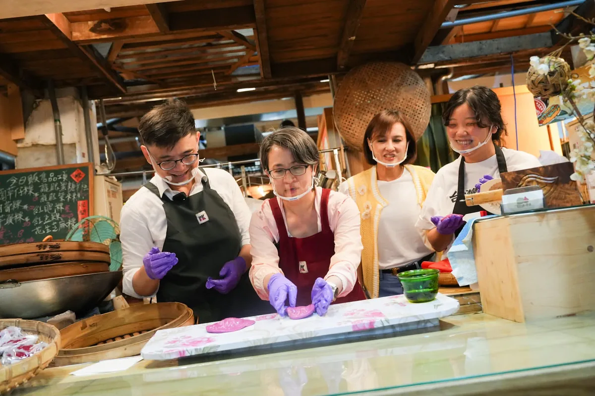
@zenolai:一顆紅龜粿，把台灣味帶向世界！ @bikhimhsiao 副總統過去擔任駐美代表時，曾在雙橡園用紅龜粿、珍珠奶茶招待國際友人。她說，在海外最懷念的，就是台灣各式各樣的傳統小吃。 日前特別帶美琴副總統到鹽埕第一公有市場，走進「食好粿大富粿」，親手體驗做紅龜粿。從包餡、搓圓到壓模，看著一顆顆紅龜粿成形，讓我們聊起台灣味、青年接班，以及高雄如何走向世界。 最後一定要說，剛出爐的紅龜粿真的很好吃！ 至於甜不甜？我想沈伯洋應該會有不同意見😆
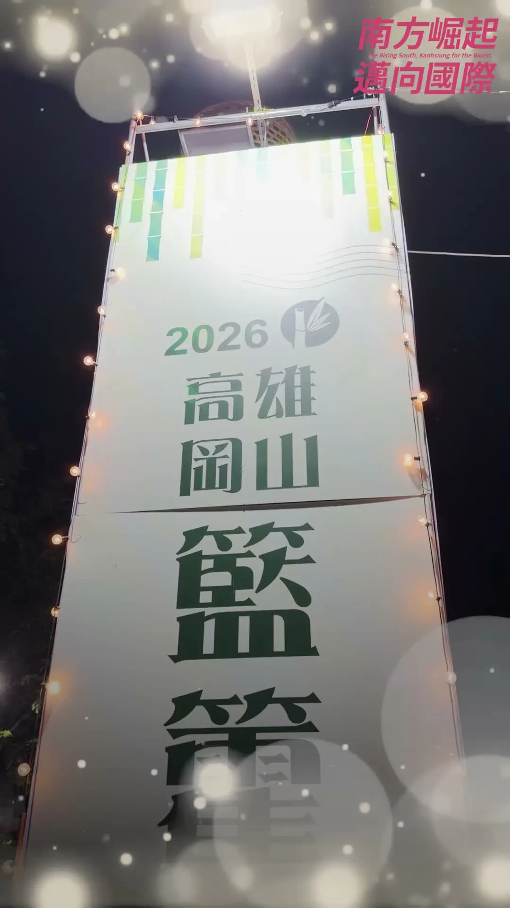
每年三次相聚在籃籗會，好吃、好玩、好逛一籮籗！
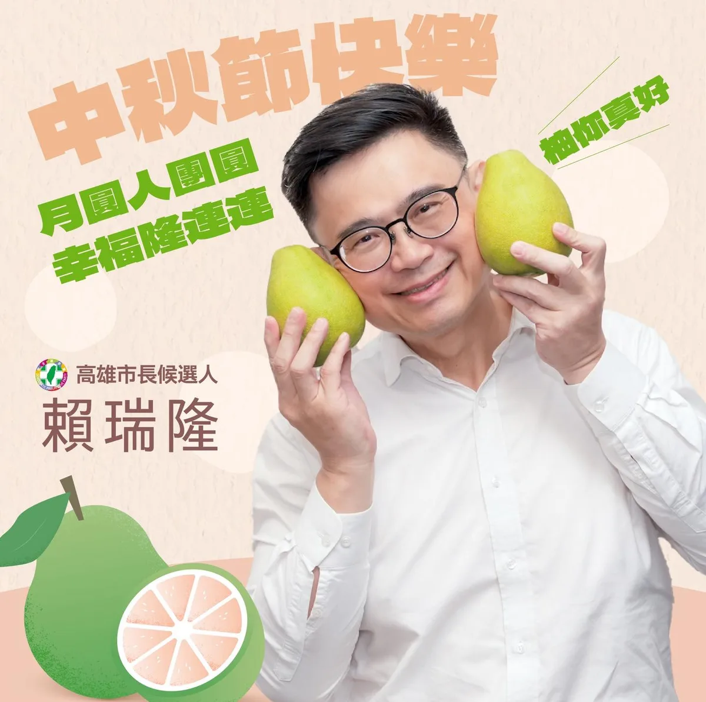
中秋佳節，柚你真好！🍐🌕 柚子一顆接一顆、月餅一顆再一顆，團圓可以「圓」，肚子不能跟著圓🤣 祝福大家月圓人團圓，好運隆連連！
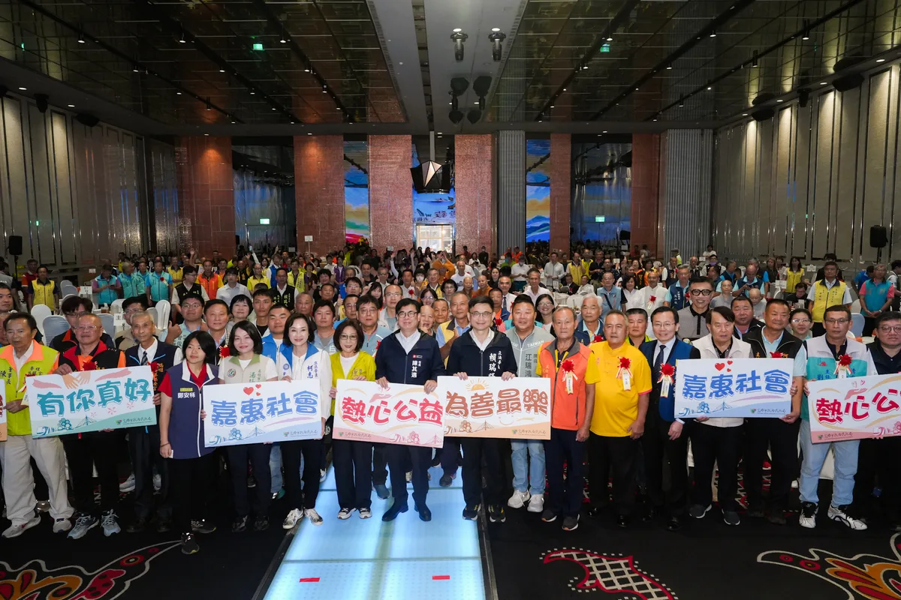
百家宗教團體，匯聚高雄最溫暖的力量 響應善心，#今年選舉補助款全數捐出！ 今天與 陳其邁 Chen Chi-Mai 市長、市府團隊及宗教界朋友齊聚，向今年獲得績優表揚的109家宗教團體表達感謝。大家捐資總額達9億7千萬元，投入急難救助、獎助學金、弱勢關懷與醫療照護，把慈悲化為行動，在許多家庭最需要幫助的時候，及時伸出援手。 宗教是安定人心的力量，也是支持社會的重要依靠，高雄的溫暖與韌性，正是來自長年默默付出的身影。特別恭喜宗教後援會總會長、意誠堂關帝廟 ＃洪榮豊 主委獲獎，也感謝副總會長 ＃李政翰 今天代表高雄市道教會出席，大家長年深耕地方，最了解鄉親的需要，也是市府推動社會關懷的重要夥伴。 看見宗教界長年付出愛心，我也不能落後，2024年我將立委選舉補助款全數捐出，今天我也在現場宣布，本次市長選舉補助款也會全數用於社會公益。 信仰各有不同，關懷這片土地的心意卻是相通的。公益不分黨派，助人不問立場，未來我和高雄隊會持續與宗教界攜手，讓民間善意與公共照顧相互支持，陪伴更多家庭度過難關，讓高雄的善與溫暖不斷延續。 康裕成 高雄市議長 何權峰 高雄市議員 邱俊憲 高雄市議員陳慧文 高雄市議員高雄市議員郭建盟 湯詠瑜 詠瑜新選擇 張勝富 高雄市議員 江瑞鴻 高雄市議員 尹立 左營楠梓市議員參選人 理想青年 張以理 李昆澤服務團隊 黃捷服務團隊 高雄小金剛許智傑服務團隊 黃飛鳳-做就對了 服務團隊 曾俊傑服務團隊 鄭孟洳服務團隊

🏠社宅、托育、勞動，環環相扣，打造安居宜居高雄 謝謝OURs專業者都市改革組織彭揚凱秘書長；社會住宅推動聯盟孫一信召集人、林育如主任；台灣勞工陣線楊書瑋秘書長、洪敬舒研究部主任；托育及就業政策催生聯盟楊秀彥代表，以及伊甸基金會張靜薇副執行長、曾雅鈴區長、林灯偉主任來訪，就社宅、托育、勞動政策提出具體訴求並交換意見。 住宅、托育、勞動，環環相扣。年輕人負擔得起住宅能安心成家；完善公共托育能放心生養；勞動環境受保障能專注工作。這三件事，是撐起一座城市宜居、安居最重要的基礎。 社宅方面，我會接續 陳其邁 Chen Chi-Mai 市長的基礎，優先盤點可用土地，增加地方自辦社宅量能；托育方面朝「一國小學區一公托」邁進，以推動社宅附設公托為目標；勞動政策關注勞退新制、雇主提撥率調升、勞檢人力與最低工資裁罰基準等議題持續推動落實。 我在勞工家庭成長，明白市民朋友的壓力與需求。感謝各團體研議倡議，督促政府施政，我會滾動檢討施政方向，讓政策符合市民的期待。
Lighting！青春來挺✨ 國務青夥伴來到高雄瑞豐夜市，向市民誠心推薦 @dpp_taiwan 民主進步黨高雄市長候選人 @zenolai 賴瑞隆。未來，賴瑞隆將帶著豐富的中央與地方實務經驗，帶領高雄邁向下一個黃金十年！ 請高雄的市民朋友，11月28日（六）唯一支持：賴瑞隆！
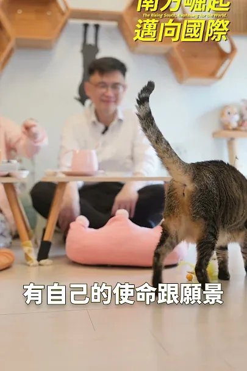
戰貓、隆貓合體！不談別的，先擼貓🐈
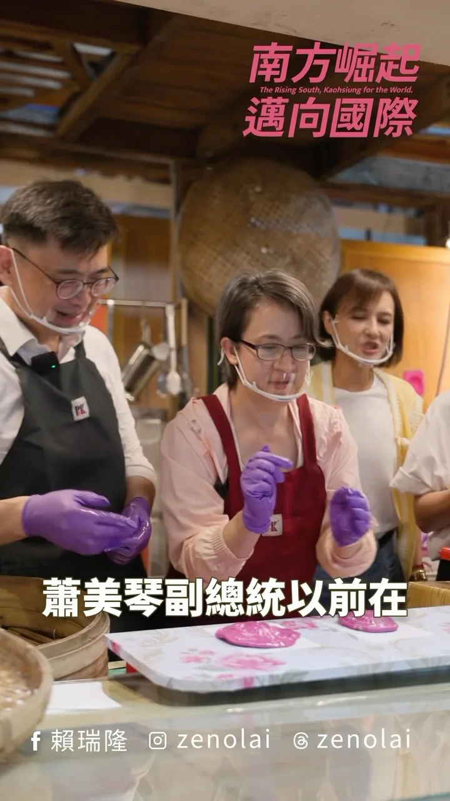
@zenolai:和 蕭美琴 副總統一起做紅龜粿，我做的比較大顆，剛好可以多分一口給大家！

各行各業一起努力，把高雄照顧得更好！ 經貿文教各界夥伴齊聚一堂，從幼教、兒照、補教、家長團體，到美容業與各界社團，大家雖來自不同領域，卻有共同心願，就是讓高雄的下一代過得更好，也讓產業有更好的發展。 謝謝劉秀鳳總會長號召成立後援總會，也謝謝各區會長帶領各行各業夥伴響應。各位都是第一線工作者，最了解家長的需要，也最清楚產業面對的問題。 孩子的成長不能等，產業發展也不能停。 未來，我會朝「一國小學區一公托」努力，增加公共托育據點、改善托育人員待遇；生育補助加碼到每胎5萬元，成立高雄育兒基金，擴大產後到宅照顧，推動每年60小時延托，讓雙薪家庭多一份支持。 對美容業的夥伴，我會透過「女力新未來」支持女性重返職場、友善創業與職訓；面對產業轉型，則以「傳產支撐科技、科技加值傳產」為主軸，讓不同產業都能找到新的發展機會。 選戰倒數67天，有越來越多不同領域的夥伴加入高雄隊，匯聚每一分力量，為高雄下一個十年努力。11月28日，市長當選、議員過半，一起為高雄拚未來！ 高雄小金剛許智傑 邱俊憲 高雄市議員 何權峰 高雄市議員 陳慧文 高雄市議員 湯詠瑜 詠瑜新選擇 高雄市議員郭建盟 黃文志 高雄市議員 江瑞鴻 高雄市議員 林智鴻 高雄市議員 張漢忠 高雄市議員 #鳳山絕配鄧巧配 洪村銘 大寮林園要改變 黃敬雅 Huang Ching-Ya 吳昱鋒-科技先鋒 理想青年 張以理 蘇致榮 鳳山阿榮 服務團隊
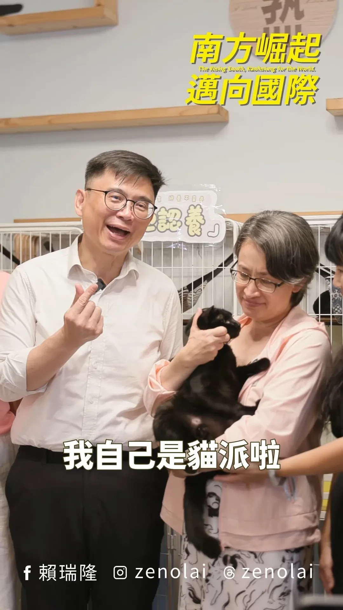
戰貓、隆貓合體！不談別的，先擼貓🐈 邀請 蕭美琴 Bi-khim Hsiao 副總統來到高雄，當然不能錯過貓奴行程。 「勘熟所」是寵物友善餐廳，同時也是收容與送養的愛心中途之家。老闆娘Shiny投入動物救援已經16年，也和我們分享黑貓「洁洁」、虎斑貓「宅宅」從救援、醫療、照護、社會化到等待認養的故事。 才進到店裡坐下，美琴副總統就立刻聊起貓，從家裡4隻貓的個性，一路聊到過去救援毛孩的故事，其中一隻就是大家都很熟悉的「蔡想想」。 每一隻被接住的毛孩背後，都有很多人的時間、心力與付出。因此，我提出「人寵共好的高雄：毛孩四個寶」，未來要增加寵物友善公園與活動空間、建立友善商家與毛經濟產業圈、擴大生命教育與責任飼養，也要持續強化中途照護、源頭管理與動保量能。 毛孩早已是許多家庭重要的一份子。一座城市如何對待動物，也反映了這座城市如何看待生命。希望未來的高雄，讓毛孩有人疼、中途有人挺、飼主有更友善的環境，讓每一個生命都能被好好接住。 戰貓＋隆貓，合體成功！🐈🐈⬛ 登真-邱議瑩 黃彥毓 前鎮小港 我願意 鄭光峰 高雄市議員 黃敬雅 Huang Ching-Ya 吳昱鋒-科技先鋒

一顆紅龜粿，把台灣味帶向世界！ 蕭美琴 Bi-khim Hsiao 副總統過去擔任駐美代表時，曾在雙橡園用紅龜粿、珍珠奶茶招待國際友人。她說，在海外最懷念的，就是台灣各式各樣的傳統小吃。 日前特別帶美琴副總統到鹽埕第一公有市場，走進「食好粿大富粿」，親手體驗做紅龜粿。從包餡、搓圓到壓模，看著一顆顆紅龜粿成形，讓我們聊起台灣味、青年接班，以及高雄如何走向世界。 鹽埕因港而生，是高雄最早與世界接軌的地方之一；有77年歷史的鹽一市場，經過改造後，老市場的記憶留下來了，也有越來越多年輕人走進來，接下上一代的手藝，再加入自己的創意。 「食好粿大富粿」年輕老闆，就是回來接下阿嬤超過30年的製粿手藝。傳統沒有停在過去，而是透過一代又一代的人，繼續發展出新的樣貌。 高雄要走向國際，靠的不只有重大建設、產業投資與大型活動，這些屬於高雄的文化、味道與人的故事，也都是最好的城市名片。未來，我將推動「南方有夢：雄青五力旗艦計畫」，讓更多年輕人有機會留在高雄創業、實現自己的想法，也能從高雄連結世界。 最後一定要說，剛出爐的紅龜粿真的很好吃！ 至於甜不甜？我想沈伯洋應該會有不同意見😆 登真-邱議瑩 簡煥宗 高雄市議員 姐姐的行動力 李喬如